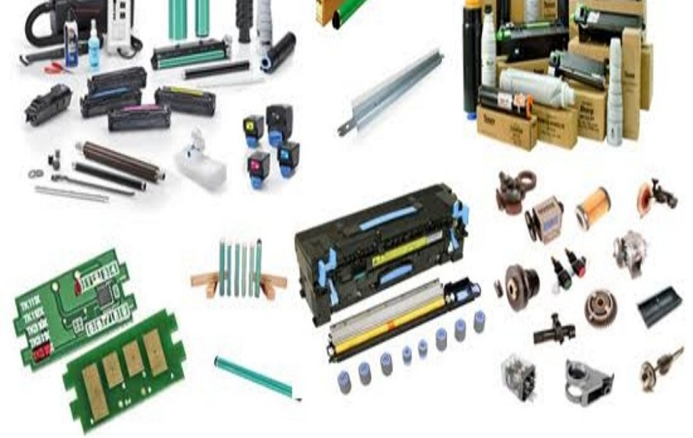

Service Details
Our service list is designed to help you get the most out of your day, from home repairs to personally visit, all we have you covered. We provide a variety of services that can be customized to fit your needs. We want to help you make the most of your time, so we offer a variety of services that can be tailored to fit your schedule. Our team of experts are here to help with whatever you need, big or small. We're always adding new services, so be sure to check back often!
PC Corner
PC Corner is your go-to destination for all things computers and technology. We provide high-quality computer sales, genuine spare parts, and expert repair services. From software installation and upgrades to network setup and virus removal, we ensure your devices run smoothly. Our skilled team is dedicated to delivering reliable solutions and personalized support for every customer. At PC Corner, your tech needs are our top priority.

Printer Spare parts
At PC Corner, we understand how essential printers are for both home and business operations. From printing important documents and invoices to creating high-quality images, your printer plays a vital role in daily productivity. However, just like any other machine, printers require regular maintenance and replacement of parts to continue functioning efficiently.
That’s why we offer a complete range of high-quality printer spare parts and accessories for all major printer brands and models. Whether you’re dealing with paper jams, faded prints, malfunctioning rollers, or connectivity issues, PC Corner provides genuine and compatible spare parts to restore your printer to peak performance.
Comprehensive Range of Printer Spare Parts
We stock and supply a wide variety of original and compatible spare parts for inkjet, laser, dot matrix, and multifunction printers. Our inventory includes:
Toner and Ink Cartridges
- Original and compatible toner cartridges for laser printers.
- Ink cartridges and refill kits for inkjet printers.
- High-yield cartridges for extended printing needs.
- Recycled and remanufactured options for eco-friendly users.
Printer Drums and Imaging Units
- OPC drums and drum units for major brands like HP, Canon, Brother, Samsung, Epson, and Ricoh.
- Complete imaging assemblies for sharp and consistent printing quality.
- Drum reset gears and chips for accurate page count management.
Fuser Assemblies and Heating Elements
- Fuser units, fuser rollers, and heating lamps for smooth toner bonding.
- Thermistors, pressure rollers, and fixing films for consistent fusing performance.
- Replacement kits for high-temperature, heavy-duty printers.
Paper Feed and Pickup Mechanisms
- Pickup rollers, separation pads, and feed rollers for smooth paper handling.
- Paper trays, cassettes, and guides to prevent jams.
- Solenoids and gears for precise paper feeding and alignment.
Print Heads and Nozzles
- Inkjet print heads for Epson, Canon, HP, and Brother printers.
- Head cleaning kits and replacement heads for clogged or damaged nozzles.
- Calibration and alignment support for accurate printing results.
Power Supplies and Control Boards
- Printer power supply units (PSU) for stable voltage and current.
- Logic boards, formatter boards, and main PCBs for electronic control.
- Interface boards and network cards for connectivity repair.
Rollers, Belts, and Gears
Power Supplies and Control Boards
- Transfer belts and separation rollers for smooth image transfer.
- Drive gears and motor assemblies for mechanical motion.
- Maintenance kits for replacing worn-out mechanical components.
Sensors, Switches, and Optical Units
- Paper detection sensors and laser scanner units.
- Optical encoders and control switches.
- Fault detection and calibration components.
Printer Cables and Connectors
- Power cables, USB, and network interface cables.
- Flexible flat cables (FFC) and connectors for internal parts.
- Wireless and Bluetooth modules for connectivity upgrades.
Exterior Components and Accessories
- Printer covers, panels, and trays.
- Display screens, keypads, and control buttons.
- Maintenance kits and cleaning accessories for extended lifespanf.
Supported Printer Brands
We provide spare parts for nearly all leading printer manufacturers, including:
- HP (Hewlett-Packard).
- Canon.
- Epson.
- Brother.
- Samsung.
- Ricoh.
- Lexmark.
- Xerox.
- Kyocera.
- Konica Minolta.
- Pantum.
- Toshiba.
- Sharp.
- Oki.
No matter the model—home printer, office multifunction device, or heavy-duty production printer—PC Corner can source the exact part you need.
Why Genuine Printer Parts Matter
Using genuine or high-quality compatible spare parts ensures:
- Longer Printer Lifespan: Genuine parts prevent premature wear and tear.
- Better Print Quality: Original components maintain sharpness, color consistency, and precision.
- Reduced Downtime: Reliable parts reduce repair frequency and operational interruptions.
- Warranty Protection: Using OEM parts helps retain manufacturer warranty coverage.
- Eco-Friendly Maintenance: Quality spares minimize waste by extending equipment usability.
We carefully inspect and verify all components before installation or sale, ensuring reliability and long-term satisfaction.
Our Services Along with Spare Parts
In addition to selling spare parts, PC Corner provides complete printer maintenance, repair, and installation services.
Printer Diagnosis and Repair: We diagnose and fix issues like paper jams, cartridge errors, and print quality problems using genuine parts for durable results.
Printer Servicing and Maintenance: Routine maintenance extends printer life. We replace worn-out parts, clean internal mechanisms, and recalibrate sensors.
Toner Refilling and Cartridge Maintenance: We refill, clean, and test cartridges to ensure consistent print performance without leakage or smudging.
Installation and Setup: We handle installation of spare parts, software drivers, and connectivity setup for both wired and wireless printers.
AMC and Bulk Servicing for Offices: We offer Annual Maintenance Contracts (AMCs) for offices, institutions, and print centers requiring regular servicing and spare part replacements.
Benefits of Choosing PC Corner for Printer Spare Parts:
- Wide Inventory: All essential printer components available under one roof.
- Genuine & Compatible Options: OEM parts as well as cost-effective compatible replacements.
- Expert Guidance: Our technicians help you choose the right parts for your specific printer model.
- Professional Installation: Skilled service for part replacement and calibration.
- Competitive Pricing: Affordable rates with transparency and quality assurance.
- Quick Availability: Fast delivery and local stocking for immediate replacements.
- After-Sales Support: Assistance with setup, troubleshooting, and future part needs.
Quality You Can Trust
All our printer parts undergo rigorous quality checks and are sourced from trusted suppliers and authorized distributors. We prioritize reliability, precision, and durability to ensure your printer continues to perform at its best.
We also offer bulk orders and dealership support for businesses, service centers, and institutions needing regular printer parts.
Types of Printers We Support
- Laser Printers – for offices and businesses needing fast, high-volume printing.
- Inkjet Printers – for homes, studios, and small offices requiring photo-quality printing.
- Dot Matrix Printers – for billing, invoices, and industrial use.
- Multifunction Printers (MFPs) – for combined print, scan, copy, and fax functionalities.
- Thermal Printers – for retail billing and barcode printing.
- Large Format & Photo Printers – for design, signage, and photography businesses.
Industries We Serve
- Corporate Offices & Businesses.
- Schools, Colleges, and Institutions.
- Banks and Financial Organizations.
- Government Departments.
- Print Shops and Copy Centers.
- Retail Stores and Billing Stations.
- Design Studios and Advertising Agencies.
Our Commitment
At PC Corner, our mission is to keep your printers running smoothly with dependable parts and expert service. We combine technical expertise with honest advice and reliable sourcing to deliver the best possible printing performance.
Whether you need a single replacement part or complete printer refurbishment, our team ensures fast, professional service with 100% satisfaction.
Keep Your Printers Performing Like New
Don’t let minor printer issues slow down your workflow. With PC Corner’s genuine printer spare parts, you can restore print quality, prevent breakdowns, and extend your printer’s lifespan — all at an affordable price.
PC Corner – Your trusted source for printer spare parts, maintenance, and professional printing solutions.